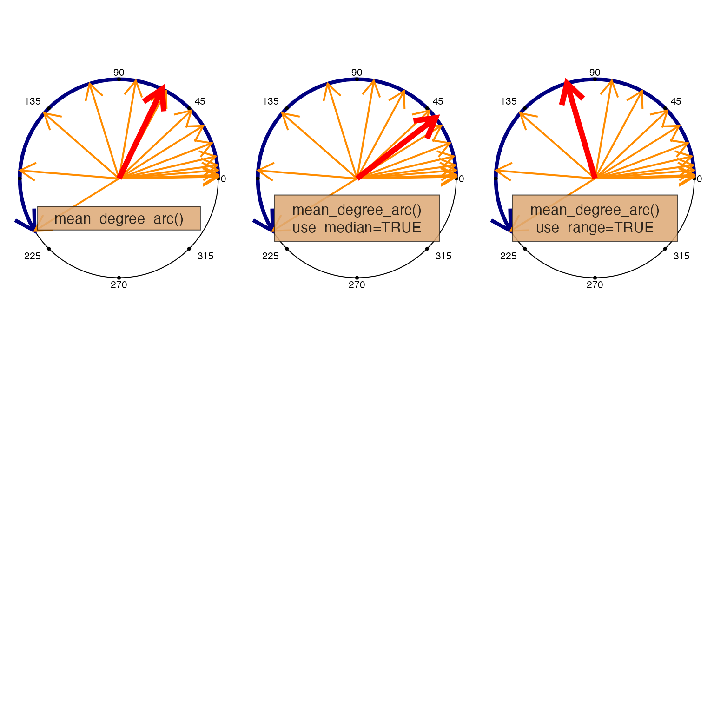

Mean arc angle in degrees
mean_degree_arc(x, use_range = FALSE, use_median = FALSE, do_plot = FALSE, ...)Arguments
- x
numericvector of angles in degrees.- use_range
logicalindicating whether to return the mean degree angle across the range, which therefore only uses the first and last angular values.- use_median
logicalindicating whether to usemedian()instead ofmean(), included here for convenience.- ...
additional arguments are ignored.
Details
This function differs from mean_degrees() in that it finds
the mean angle in degrees from angles along an arc, guaranteeing
that the mean angle is along that numeric arc. It is intended
that the arc does not cover more than 360 degrees, and for angles
whose numeric values are increasing.
See also
Other venndir spatial:
degrees_to_adj(),
diff_degrees(),
display_angles(),
mean_degrees(),
rescale_coordinates(),
spread_degrees()
Examples
set.seed(1);
steps <- sample((1:12)^1.5, size=14, replace=TRUE);
steps <- sort(steps);
x <- cumsum(steps);
x;
#> [1] 1.000000 2.000000 4.828427 7.656854 12.853007 20.853007
#> [7] 32.033347 43.213686 61.733946 80.254205 107.254205 138.876981
#> [13] 175.359854 211.842727
opar <- par("mfrow"=c(2, 3));
on.exit(par(opar));
mean_degree_arc(x, do_plot=TRUE);

#> [1] 64.26859
#> attr(,"radius")
#> [1] 1
mean_degree_arc(x, use_median=TRUE, do_plot=TRUE);
#> [1] 37.62352
#> attr(,"radius")
#> [1] 1
mean_degree_arc(x, use_range=TRUE, do_plot=TRUE);
 #> [1] 106.4214
#> attr(,"radius")
#> [1] 1
x <- x + 235;
mean_degree_arc(x, do_plot=TRUE);
#> [1] 106.4214
#> attr(,"radius")
#> [1] 1
x <- x + 235;
mean_degree_arc(x, do_plot=TRUE);
 #> [1] 299.2686
#> attr(,"radius")
#> [1] 1
mean_degree_arc(x, use_median=TRUE, do_plot=TRUE);
#> [1] 272.6235
#> attr(,"radius")
#> [1] 1
mean_degree_arc(x, use_range=TRUE, do_plot=TRUE);
#> [1] 341.4214
#> attr(,"radius")
#> [1] 1
#> [1] 299.2686
#> attr(,"radius")
#> [1] 1
mean_degree_arc(x, use_median=TRUE, do_plot=TRUE);
#> [1] 272.6235
#> attr(,"radius")
#> [1] 1
mean_degree_arc(x, use_range=TRUE, do_plot=TRUE);
#> [1] 341.4214
#> attr(,"radius")
#> [1] 1